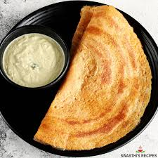

Description
Idlies are one of the most popular culinary choices in South India. The ease of preperation, the versatility of pairing it with various side dishes, as well as the just the savoury taste in general, makes it a truly wonderful creation of mankind
Now, how do we go about making this absolutely mouthwatering dish? So glad you're here to learn.
1 cup brown rice flour
1/2 cup wheat flour
1 1/2 cups water
1 red onion, chopped
1 clove garlic, minced
1/4 cup coriander
turmeric
ground cumin
2 tsp mustard seeds
1 tsp ginger
1 tsp vegetable oil
Steps
- Stir the brown rice and whole wheat flours together in a mixing bowl. Stir in the water to make a thin batter. Add the onion, garlic, cilantro, sugar, turmeric, cumin, mustard seeds, cumin seeds, coriander, ginger, cayenne pepper and rice vinegar until evenly blended. Cover, and refrigerate for at least 1/2 hour, or overnight.
- To cook the dosas, heat the oil in a skillet over medium heat. Pour 1/4 cup of batter into the skillet, spreading it over the bottom in a thin layer. Cook 1 minute, turn, and cook 1 minute more. Remove from the pan. Repeat with remaining batter.